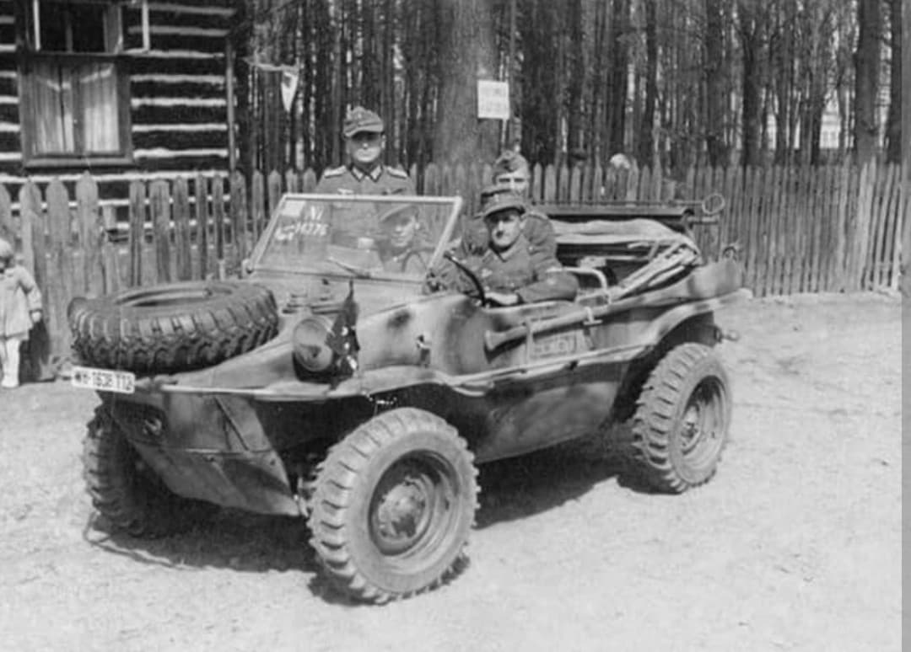
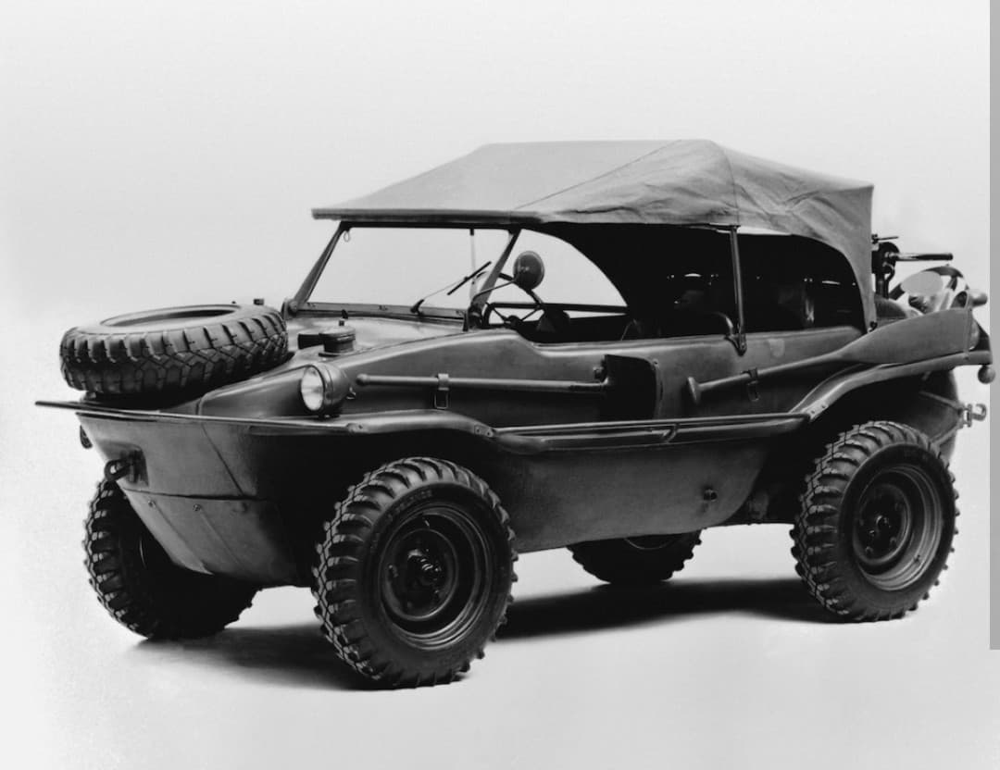
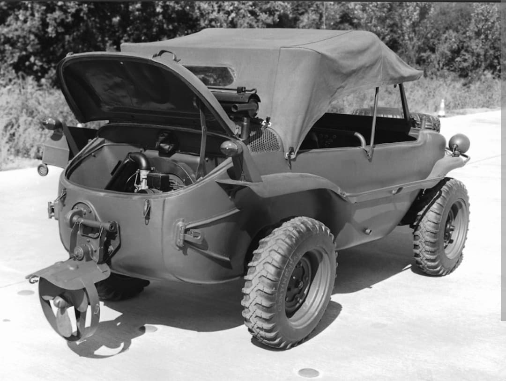

Le véhicule léger amphibie à quatre roues motrices : génie technique et mobilité franchisseuse de la Wehrmacht

Développé pour répondre aux besoins de mobilité extrême des troupes de reconnaissance et des unités de pionniers, le Schwimmwagen (Volkswagen Typ 166) est incontestablement le véhicule militaire amphibie léger le plus réussi de la Seconde Guerre mondiale.
Évolution directe du Kübelwagen, il combinait une excellente étanchéité, une hélice rabattable pour la navigation fluviale et une transmission à quatre roues motrices permanente ou enclenchable, lui permettant de franchir cours d'eau, marécages et terrains extrêmement boueux.
Conçu par l'équipe de **Ferdinand Porsche** en 1941, le Typ 166 repose sur une coque autoporteuse étanche en forme de baignoire, sans portes pour éviter les infiltrations d'eau. Son châssis plus court et plus étroit que celui du Kübelwagen améliore considérablement sa maniabilité et son franchissement tout-terrain.
Propulsé par un moteur 4 cylindres refroidi par air de 1 131 cm³ développant 25 chevaux, le Schwimmwagen disposait d'une hélice à trois pales montée à l'arrière. Une fois abaissée et couplée au vilebrequin moteur, l'hélice lui permettait d'atteindre une vitesse de 10 km/h sur l'eau, les roues avant servant de gouvernail.

Déployé dès 1942 sur le front de l'Est, le Schwimmwagen s'est révélé indispensable face à la redoutable Raspoutitsa (la saison des boues) et lors du franchissement des très nombreux fleuves et rivières d'Union soviétique.
Également très apprécié lors de la campagne de Normandie pour sa capacité à s'infiltrer discrètement à travers les routes inondées et le bocage, le Schwimmwagen était principalement attribué aux bataillons de reconnaissance des Panzer-Divisionen et de la Waffen-SS, où sa polyvalence tactique faisait merveille.

Fabriqué à plus de **14 000 exemplaires** entre 1942 et 1944 dans l'usine de Wolfsburg, le Schwimmwagen détient le record du véhicule amphibie le plus produit de l'histoire militaire.
Considéré comme un chef-d'œuvre de simplicité mécanique et de polyvalence, il reste aujourd'hui l'un des véhicules de collection de la Seconde Guerre mondiale les plus recherchés au monde par les musées et les passionnés d'histoire militaire.
Page du Musée HOP WW2 – Section Véhicules Terrestres Allemands